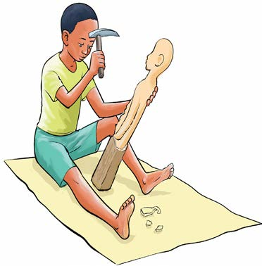

Activity 3
Use clay soil to make the items you like.
Carving
Carving is the activity of making an object by cutting and shaping a piece of wood or stone. Tools used to carve include a chisel, knife, sharpening throw and sandpaper. Some items made by carving include wooden spoons, cups, bowls and statues.
Study of the pictures and answer the questions that follow:

1. Carving work